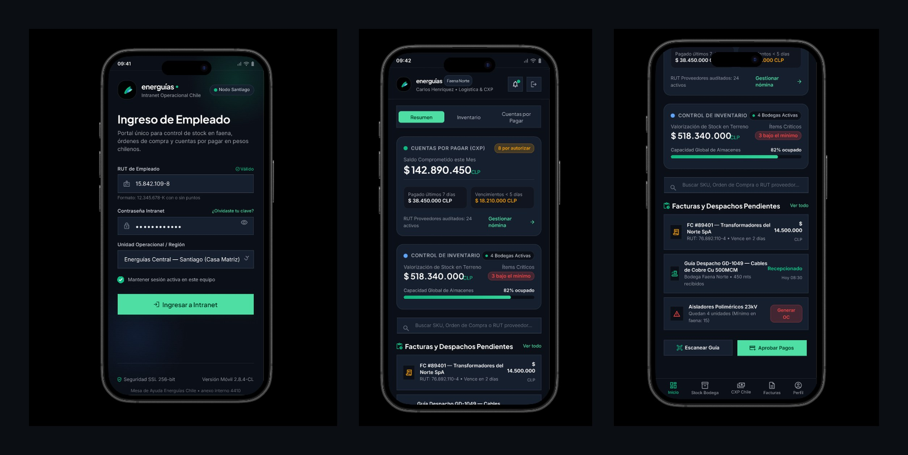
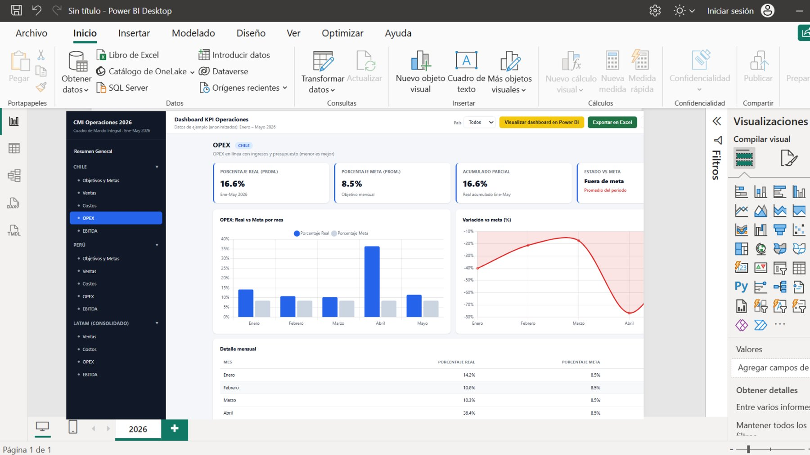
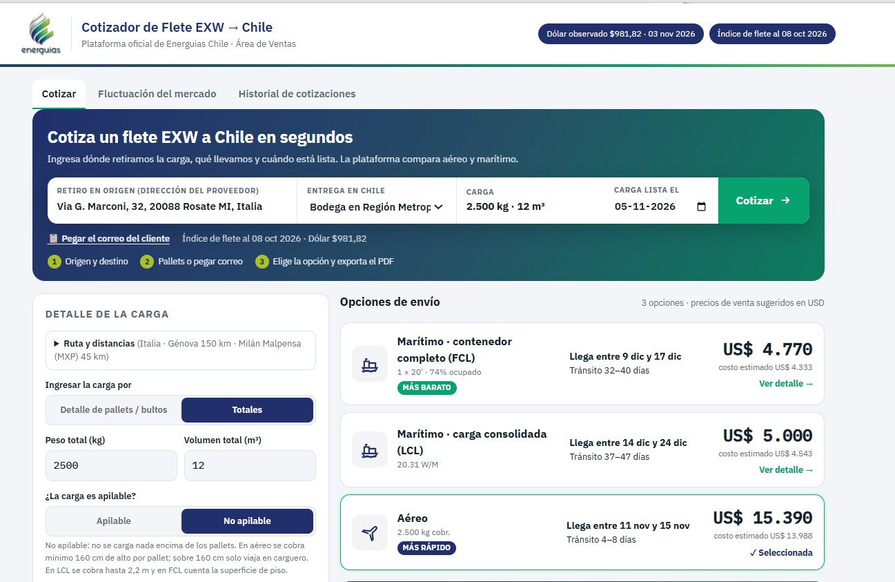

Microsoft 365 · React Native · Power BI
Cuatro soluciones conectadas entre sí: una intranet en SharePoint para centralizar la información, una app móvil interna en React Native para que el equipo vea las urgencias del mes, un cuadro de mando en Power BI para la gerencia y un cotizador maestro de fletes para el área de ventas.
Four connected solutions: a SharePoint intranet to centralize information, an internal React Native mobile app so the team can see the month's priorities, a Power BI scorecard for management and a master freight quoter for the sales team.
Además de la intranet, diseñé en Figma y desarrollé en React Native con Expo una app móvil para uso interno del personal. Así el equipo puede ver entre todos cuál es la urgencia del mes: cuentas por pagar por autorizar, stock en faena e ítems bajo el mínimo, y facturas y despachos pendientes. El panel se testeó con Lighthouse y Microsoft Clarity.
Alongside the intranet, I designed in Figma and built with React Native and Expo a mobile app for internal staff use, so everyone can see the month's top priority: payables awaiting approval, on-site stock and items below minimum, and pending invoices and dispatches. The panel was tested with Lighthouse and Microsoft Clarity.

Diseño de las pantallas con código: ingreso de empleado, resumen con pestañas (Resumen, Inventario, Cuentas por Pagar) y tarjetas de estado con alertas de color.
Code-based screen design: employee login, tabbed summary (Summary, Inventory, Payables) and status cards with color alerts.
App móvil con componentes reutilizables (tarjetas de CXP e inventario, lista de pendientes, acciones rápidas como Escanear guía, Aprobar pagos y Generar OC) y navegación inferior por pestañas.
Mobile app with reusable components (payables and inventory cards, pending list, quick actions like Scan dispatch note, Approve payments and Create PO) and bottom tab navigation.
Auditorías de rendimiento, accesibilidad, buenas prácticas y SEO para detectar y corregir problemas antes de liberar la app.
Performance, accessibility, best-practice and SEO audits to find and fix issues before release.
Mapas de calor y grabaciones de sesión para ver cómo el personal usaba realmente el panel y ajustar el diseño según su comportamiento.
Heatmaps and session recordings to see how staff actually used the panel and adjust the design to their behavior.
Dashboard de KPIs para la gerencia con navegación por país (Chile, Perú y LATAM consolidado) y por indicador: objetivos y metas, ventas, costos, OPEX y EBITDA. Compara el real contra la meta mes a mes y marca en rojo lo que está fuera de meta.
KPI dashboard for management with navigation by country (Chile, Peru and consolidated LATAM) and by indicator: goals and targets, sales, costs, OPEX and EBITDA. Compares actual vs target month by month and flags in red what's off target.

Medidas para porcentaje real, porcentaje meta, acumulado del período, variación vs meta y estado (dentro o fuera de meta).
Measures for actual %, target %, period-to-date, variance vs target and status (on or off target).
Limpieza y unión de las fuentes por país en un solo modelo, con datos anonimizados para la demo.
Cleaning and merging country sources into one model, with anonymized data for the demo.
Menú lateral con botones y marcadores para moverse por país e indicador, filtro de país y exportación a Excel.
Side menu with buttons and bookmarks to move across countries and indicators, a country filter and Excel export.
Tarjetas KPI arriba, gráfico real vs meta, curva de variación y tabla de detalle al final: de lo general a lo particular.
KPI cards on top, actual-vs-target chart, variance curve and detail table last: from overview to detail.
Plataforma interna para el área de ventas. Con la dirección del proveedor, el destino en Chile, la carga y la fecha en que está lista, compara las opciones de embarque y entrega el precio de venta sugerido en segundos, en vez de pedir cotizaciones una por una.
An internal platform for the sales team. From the supplier's address, the destination in Chile, the cargo and its ready date, it compares shipping options and returns a suggested sale price in seconds, instead of requesting quotes one by one.

Marítimo contenedor completo (FCL), marítimo consolidado (LCL) y aéreo, con tránsito, fechas de llegada y etiquetas «más barato» y «más rápido».
Full-container sea (FCL), consolidated sea (LCL) and air, with transit time, arrival dates and "cheapest" / "fastest" labels.
Muestra el costo estimado y el precio de venta sugerido en USD, usando el dólar observado y el índice de flete del día.
Shows the estimated cost and suggested sale price in USD, using the day's observed dollar rate and freight index.
Carga por pallets o por totales, apilable o no apilable, con las reglas de alto y superficie de cada modalidad explicadas en pantalla.
Cargo by pallets or totals, stackable or not, with each mode's height and floor-space rules explained on screen.
Tres pasos (origen y destino, carga, elegir y exportar PDF), opción de pegar el correo del cliente, historial de cotizaciones y fluctuación del mercado.
Three steps (origin and destination, cargo, choose and export PDF), paste-the-client-email option, quote history and market fluctuation.